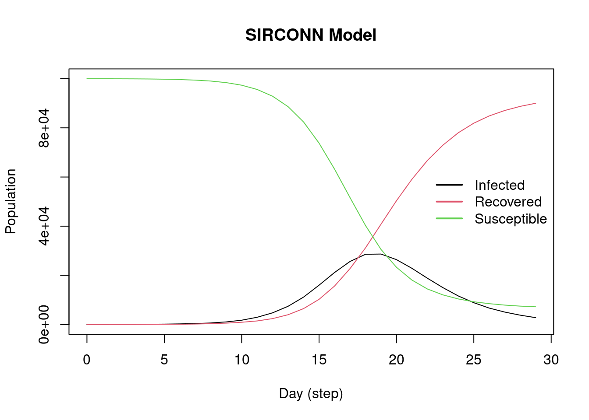
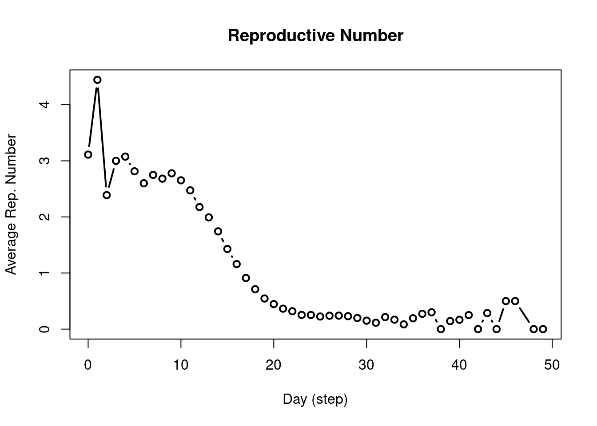

library(epiworldR)
model_sirconn <- ModelSIRCONN(
name = "COVID-19",
n = 100000,
prevalence = 0.0001,
contact_rate = 2,
prob_transmission = 0.5,
prob_recovery = 1/3
)Part 1: Basic Modeling
epiworldR is an R package that provides a fast (C++ backend) and highly-customizable framework for building network-based transmission/diffusion agent-based models [ABM]. Some key features of epiworldR are the ability to construct multi-disease models (e.g., models of competing multi-pathogens/multi-rumor,) design mutating pathogens, architect population-level interventions, and build models with an arbitrary number of compartments/states (beyond SIR/SEIR.)
Example 1: Simulating a SIR model
Setup and running the model
This example implements a social network with parameters listed within the ModelSIRCONN function. The disease name is specified (COVID-19), 100000 agents are initialized, disease prevalence of 0.0001 is declared, each agent will contact two others (contact_rate), probability of transmitting the disease for any given agent is 0.5, and probability of recovery is set to \(\frac{1}{3}\).To create this model on epiworldR, simply use the ModelSIRCONN function. From here, the example will take you through the basic features of epiworldR.
Printing the model shows us some information. First, the name of the model, population size, number of entities (think of these as public spaces in which agents can make social contact with one another), the duration in days, number of variants, amount of time the last replicate took to run (last run elapsed t), and rewiring status (on or off). The next piece of information you will see is a list of the viruses used in the model. In this case, COVID-19 was the only disease used. Note that epiworldR has the capability to include more than one virus in a model. Tool(s) lists any tools that agents have to fight the virus. Examples ofthis may include masking, vaccines, social distancing, etc. In this model, no tools are specified. Lastly, the model parameters are listed, which originate from the parameters specified in the model.
model_sirconn
________________________________________________________________________________
SIMULATION STUDY
Name of the model : Susceptible-Infected-Removed (SIR) (connected)
Population size : 100000
Number of entities : 0
Days (duration) : 0 (of 0)
Number of variants : 1
Last run elapsed t : -
Rewiring : off
Global actions:
(none)
Virus(es):
- COVID-19 (baseline prevalence: 0.01%)
Tool(s):
(none)
Model parameters:
- Contact rate : 2.0000
- Prob. Recovery : 0.3333
- Prob. Transmission : 0.5000To execute the model, use the run function with the SIR model object, number of simulation days, and an optional seed for reproducibility. Next, print out the results from the simulated model using model_sir.
run(model_sirconn, ndays = 50, seed = 1912)_________________________________________________________________________
|Running the model...
|||||||||||||||||||||||||||||||||||||||||||||||||||||||||||||||||||||||| done.
| done.model_sirconn
________________________________________________________________________________
SIMULATION STUDY
Name of the model : Susceptible-Infected-Removed (SIR) (connected)
Population size : 100000
Number of entities : 0
Days (duration) : 50 (of 50)
Number of variants : 1
Last run elapsed t : 1.00s
Last run speed : 4.02 million agents x day / second
Rewiring : off
Global actions:
(none)
Virus(es):
- COVID-19 (baseline prevalence: 0.01%)
Tool(s):
(none)
Model parameters:
- Contact rate : 2.0000
- Prob. Recovery : 0.3333
- Prob. Transmission : 0.5000
Distribution of the population at time 50:
- (0) Susceptible : 99990 -> 6514
- (1) Infected : 10 -> 3
- (2) Recovered : 0 -> 93483
Transition Probabilities:
- Susceptible 0.95 0.05 0.00
- Infected 0.00 0.67 0.33
- Recovered 0.00 0.00 1.00There are two additional sections in the model summary after running the model object, the first being the distribution of the population at time 50. This section describes the flow of agents from each state (SIR) after 50 days. In the example, you’ll see the number of agents in the susceptible state decreasedfrom 99900 to 26456, the number of agents in the infected state increased from 100 to 501, and the number of recovered agents increased to 73043 after 50 days. The counts for these states will of course, change based on model parameters or simulation run-time. The transmission probabilities section outputs a 3x3 matrix that describes the probability of moving from one state to another. For example, in the susceptible row, each agent has a 0.97 probability of remaining in the susceptible state with a 0.03 probability of moving from the susceptible state to the infected state. Notice in all cases, there is a probability of 0 to skip states. In other words, it is impossible for an agent to jump from the susceptible state to the recovered state; that agent must pass through the infected state in order to then progress to the recovered state. The same logicapplies with moving backwards; an agent cannot become susceptible again after being infected.
Extracting Simulation Data
After running the epiworldR model, below is a list of all the functions that can be called using the epiworldR model object. To demonstrate, start with the basic plot and get_hist_total functions.
methods(class = "epiworld_model") [1] add_tool_n add_tool
[3] add_virus_n add_virus
[5] agents_from_edgelist agents_smallworld
[7] get_hist_tool get_hist_total
[9] get_hist_transition_matrix get_hist_variant
[11] get_n_replicates get_n_tools
[13] get_n_variants get_name
[15] get_ndays get_param
[17] get_reproductive_number get_states
[19] get_transition_probability print
[21] queuing_off queuing_on
[23] run_multiple run
[25] set_name set_param
[27] size verbose_off
[29] verbose_on
see '?methods' for accessing help and source codeVisualization
plot(model_sirconn)
As evident from the above plot, the SIR model constructed from epiworldR displays the changes in susceptible, infected, and recovered case counts over time (days). Notice after a certain amount of time, the curves flatten. Below, a table representation of the above plot is printed, complete with each state within the SIR model, date, and agent counts.
Using Network Data
head(get_hist_total(model_sirconn)) date state counts
1 0 Susceptible 99990
2 0 Infected 10
3 0 Recovered 0
4 1 Susceptible 99981
5 1 Infected 16
6 1 Recovered 3An important statistic in epidemiological models is the reproductive number.
repnum <- get_reproductive_number(model_sirconn)
head(repnum) variant source source_exposure_date rt
1 0 29130 48 0
2 0 29680 46 0
3 0 37567 46 1
4 0 78064 46 1
5 0 34389 45 1
6 0 26244 43 0epiworldR has a method to automatically plot the reproductive number. Thisfunction takes the average of values in the above table for each date and repeats until all date have been accounted for. For example, on average, individuals who acquired the virus on the 10th day transmit the virus to roughly 1.7 other individuals.
x <- plot(repnum, type="b")
Exercise 1
Create a SEIR model to simulate a COVID-19 outbreak for 100 days in a population with initial prevalence = 0.01, infectiousness = 0.9, probability of recovery = \(\frac{1}{4}\), and incubation days = 4. Then plot the model parameters to analyze changes in counts over time.
Tip
To accomplish this for a SEIR model, you will need to add the model to a smallworld population using the agents_smallworld function after initializing the model. From there, run the model and plot. Assume n = 10000, k = 5, d = FALSE, and p = .01.
Solution
# Initialize model
model_seir <- ModelSEIR("COVID-19",
prevalence = 0.01,
infectiousness = 0.9,
recovery = 1/4,
incubation_days = 4)
# Adding a small world population
agents_smallworld(
model_seir,
n = 10000,
k = 5,
d = FALSE,
p = .01
)
# Running model
run(model_seir, ndays = 100, seed = 1912)_________________________________________________________________________
Running the model...
||||||||||||||||||||||||||||||||||||||||||||||||||||||||||||||||||||||||| done.
done.# Plotting
plot(model_seir)
Exercise 2
Plot the reproductive number of the simulated SEIR model over 100 days.
Solution
repnum <- get_reproductive_number(model_seir)
plot(repnum, type = 'b')